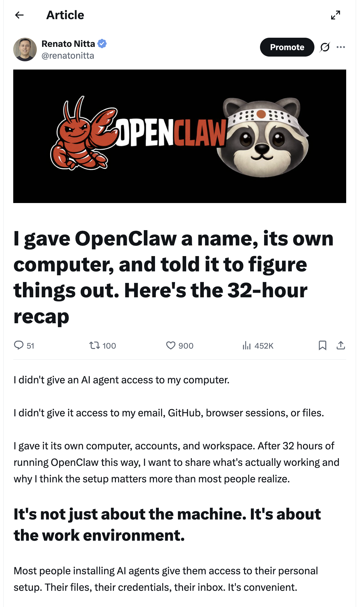
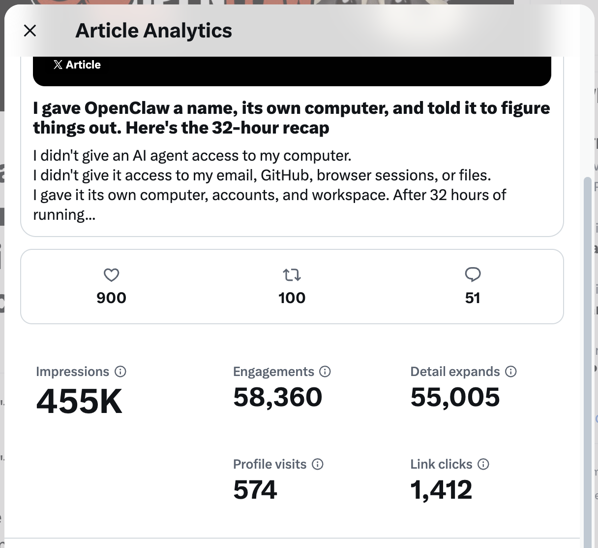
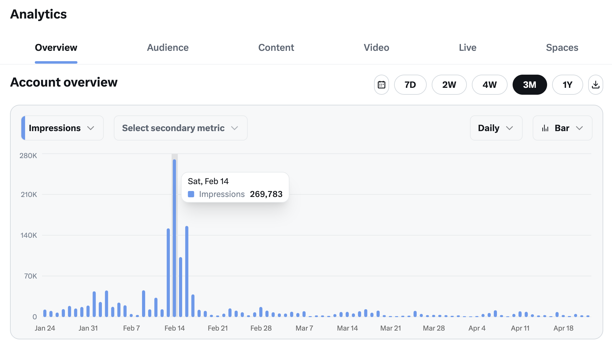

Todo mundo instalando OpenClaw no Mac Mini.

Eu só tinha um notebook antigo que minha filha usou
para estudar ou fingir que estudava durante a pandemia

Comecei com Linux Omarchy,
depois migrei para Ubuntu


Tinha só 4GB de RAM e funcionou.
Depois comprei mais 4GB, ficou 8GB.

Ele fica fechado na minha mesa fixa do Coworking

Quando preciso, acesso via RDP com Tailscale

Ele tem suas próprias contas
Email
GitHub
X
Compartilhamos arquivos pelo GitHub

Ele escreve um diário relatando tudo que fez no dia

Métricas de seguidores no GitHub usando API do X

Ainda estou descobrindo
o que mais posso fazer com ele
Só de experimentar,
aprender
e compartilhar o aprendizado no X
já valeu



Obrigado!
Renato Nitta
X: @renatonitta
Claw Con SP · 2026